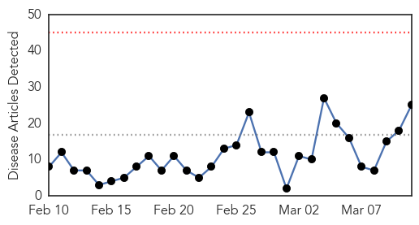

30 Day Trends
Web: 0 alerts, 0 warnings
Twitter: 0 alerts, 0 warnings
Top Articles:
- 0.997
- Fight against communicable diseases: Monkey, dog, duck cells used to culture flu vaccine faster- Nikkei Asian Review
- 0.988
- Pharmacies see rise in Tamiflu prescriptions
- 0.979
- Bird Flu Spreads Across China, Posing Threat to People
- 0.978
- Bird Flu Spreads Across China, Posing Threat to People: Report
- 0.976
- Doctor fears global flu pandemic "long overdue"
- 0.976
- Current bird flu in China could become ‘pandemic’ threat to humans, researchers say
- 0.974
- Flu Virus in China Has Pandemic Potential, Scientists Say
- 0.907
- Swine flu outbreak in India raises concern
- 0.848
- NW Arkansas turkeys test positive for avian flu
- 0.824
- Threatwatch: Bird flu's back and it's brought friends
- 0.822
- Avian Influenza Confirmed In Arkansas Turkey Flock
- 0.807
- Presence of bird flu strain locally marks first time it was found in Missouri
- 0.779
- Avian Influenza confirmed at 2nd turkey farm in Missouri
- 0.765
- Bird Flu Confirmed At Turkey Farm In Moniteau County
- 0.764
- Missouri's second H5N2 outbreak in turkeys confirmed
- 0.762
- Bird flu confirmed at Mid-Missouri turkey farm
- 0.751
- March 10, 2015 Archives
- 0.751
- March 10, 2015 Archives
- 0.730
- Bird Flu Confirmed In Two Missouri Flocks
- 0.728
- Meet Robert Kennedy Jr. in Atlanta for ‘Trace Amounts’ screening Thursday March 12
- 0.708
- Cargill affected by spread of bird flu
- 0.688
- USAID helps VN to fight emerging contagious diseases
- 0.617
- H5N2 Avian Influenza Virus Infects More Missouri Turkey Growing Facilities, MDA Confirms
- 0.614
- Avian Flu Found on Turkey Farms Supplying Butterball
- 0.610
- USAID helps Vietnam prevent emerging contagious diseases
Top Tweets:
- 0.541
- RT: Influenza news: H7N9 bird flu has the makings of a pandemic virus scientists warn http://t.co/lKjuWxTiEd pathogenposse
Web/News Articles
Tweets

Article Locations

Article Confidences